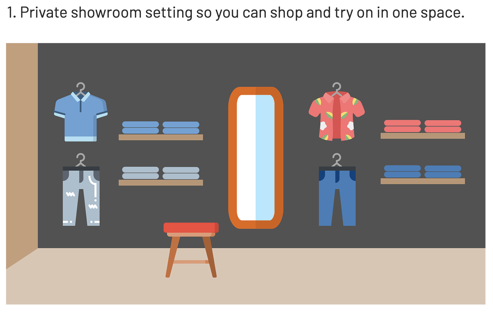
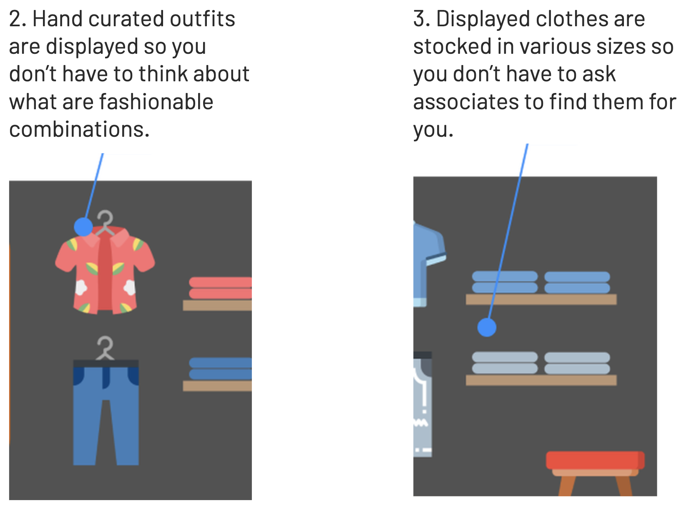
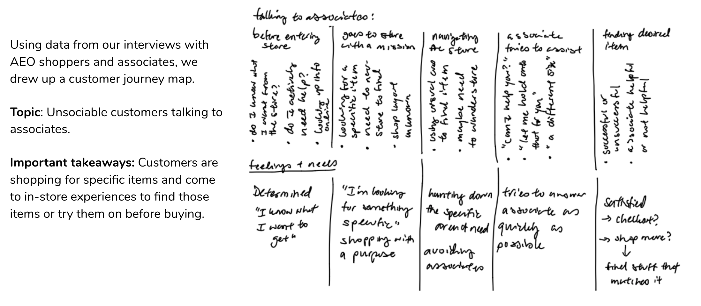
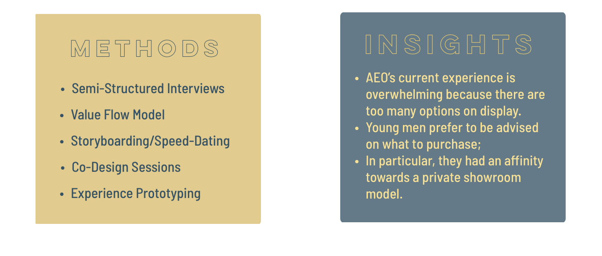
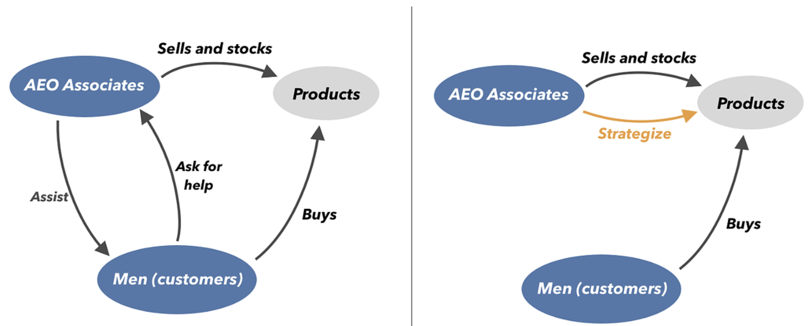
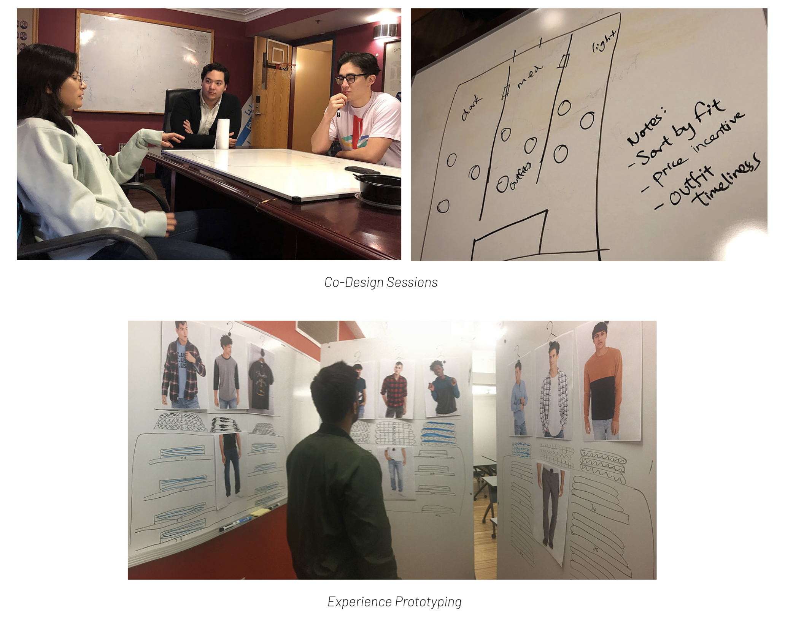
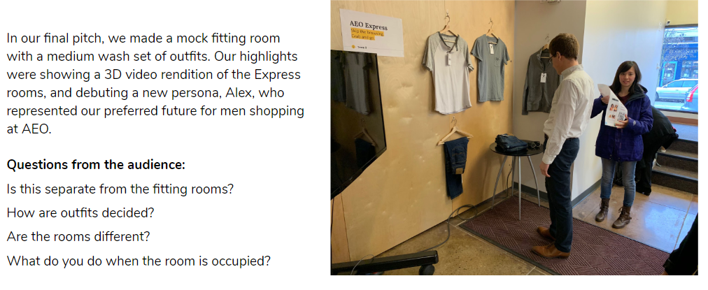

Yingli Sieh
Researcher | Designer | Innovator
AEO Express
Role: User Researcher
Duration: 2 months, Oct 2018 - Dec 2018
Methods: Customer Journey Mapping, Co-Design, Competitive Analysis, Personas, Service Blueprints
Course: Service Design
The Client:
American Eagle Outfitters
AEO challenged our team to deliver high market value opportunities to improve their overall service offering without changing their existing product line.
The Problem:
AEO has 26 minutes in-store to get young men to buy their clothes.
AEO consistently satisfies their male customer base with great offerings in jeans, shirts, and accessories - however, their male customers have a high resistance to the shopping experience, on average spending only 26 minutes in-store before deciding to buy or leave.
How can we convince men to stay in AEO long enough to find their next favorite outfit?
The Goals:
Create a shopping experience that is fast and trustworthy (fashionably speaking).
These were our guiding principles for designing AEO Express:
1. It needed to target a market that could generate significant new sales;
2. Make the selection and purchasing process frictionless (25 minutes or less);
3. Instill confidence in shoppers that they are making fashionable choices;
4. Create an experience that off-loads redundant AEO associate work and allows them to focus on strategic initiatives.
The Solution:
Enter your own private showroom with clothes curated by experts so you’re guaranteed to walk away with a fashionable outfit.
AEO Express creates an “on the go” shopping experience for men, where you can skip the browsing and grab what you need with confidence. Rather than go into the larger store, you can go into the AEO Express showroom, try on outfits curated by AEO service specialists and purchase on the spot.
 The Process:
At the start, the Innovation and User Experience team at AEO had given us some seeds to begin our research. We opted to explore In-Store Personalization because we saw an opportunity to innovate on a space that was traditionally stagnant and relatively untouched.
We started with some basic hypotheses we had about different demographics and their in-store shopping habits. In particular, we explored the journeys of teens shopping for themselves and parents shopping for their kids using customer journey maps.
Generative Research:
So, who exactly shops at American Eagle, and how?
Our team started the project with some valuable face to face time with our clients. They were able to outline their understanding of their user group, which includes 14 - 24 year old female and 14 - 34 year old male shoppers for coordinating outfits that meet current trends while also staying affordable.
One notable comment our clients made were that male shoppers were a small but reliable group of customers for AEO - though men make up about 24% of main market AEO typically serves, the male customers who do stay with AEO seem do to it for a longer time of their lives than women. On top of that, AEO has made intentional menswear branding and male-specific marketing specifically targetting jeans, t-shirts, accessories, and fragrances for men.
How can AEO change the experience to capture the attention and wallet share of this nascent user group?


At the advice of our clients, we wanted to narrow our solution towards something that would most meaningfully generate new sales for AEO. Based on research in the market, we believed we had an opportunity to expand the young men’s share of wallet in AEO purchases much wider than we could with young women.
From interviewing young men about their shopping habits and creating a value flow model, we knew they didn't like to spend time shopping, but still wanted to feel confident that the clothes they were wearing were fashionable.
In this vein, we changed our problem statement to be: “Young men want to dress fashionably, but often find the in-store shopping experience to be stressful, confusing, and inefficient. They just want to make quick, confident outfit choices."
Design Research:
"I just want to focus on the clothes."
We created a value flow model that helped us identify an area where we could empower young men and, as a bonus, shift associate work to strategic stocking initiatives.
"Just tell me what to buy and leave me alone."
We learned from a number of storyboarding sessions that men really gravitated towards design solutions that gave them tools to shop for themselves with minimal intervention from associates.

"Show me AEO's best clothes. Not all of it."
Our co-design sessions and experience prototyping revealed that men really wanted stores to take more initiative in telling them exactly what to buy.
Design Decisions:
1. AEO Express as a store within a store.
This was a big design decision we made shortly after pivoting to young men as our target market. Our client asked whether we could have AEO Expresses independent of the AEO store and set up in unique places, such as music festivals or in malls without an AEO presence. We certainly wanted AEO Express to have modularity, and therefore ultimate flexibility in implementation in the future, but we believed that AEO Express would have the most meaningful impact as part of the larger store because men are not likely to just shop on a whim, so if they came across an AEO Express during a music festival (for example), they would not be in the mindset to go shopping. Instead, we wanted to put the AEO Expresses in places men were already familiar with so it would be there waiting for them when they arrived.
2. AEO Express stocked by associates.
The added benefit of our model is that we foresee our solution creating spaces for associates to grow into more strategic roles. What we had identified from our PSS model was that associates spend a large amount of their time hand-holding customers and giving them advice on things to purchase. Instead of doing that work, they could be influencing what AEO stocks their shelves with through AEO Express. They could expertly curate items for the showcase, based on their knowledge and predictions of trends and AEO’s own business goals.
Final Result:
Based on the final rounds of Experience Prototyping we did with our target demographic, we found young men very receptive to the concept and were generally able to browse through the showroom quickly, identifying items they liked and outfits that matched. Based on the warm reception, we felt confident in our solution.